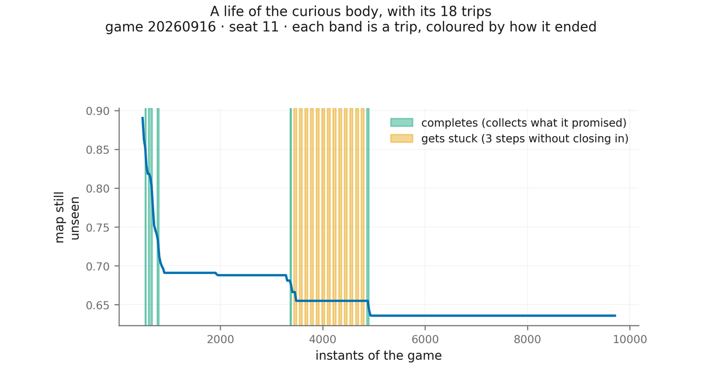

G-EMV: Emotion and Reason in an Agent. Curiosity, Trust and Commitment
Independent researcher, Barcelona
This work observes and tests an artificial creature made of two parts. A body that feels what it lacks in three dimensions, its body, its resources and its bonds: what that body feels is what we call emotion here. And beside it a head that talks, a language model that advises it: that is reason. The question is when thinking is of use to a body like this.
To answer it we give the world time, with games twice as long, and we build three pieces. The first is a wide door: the advisor no longer proposes a step, but a whole plan with its emotional shape, what the body will feel on each leg of the way, and the body judges it with its own table. This door tells good advice from random advice, something the earlier one did not do; but, so as not to fool itself, it can only judge the small part of the good that the body is able to foresee. The second is trust, which is earned and lost with results: in the tests, an advisor that talks at random soon loses trust and stops moving the body with good news. The third is curiosity, installed as one more need of the body. As a nudge at each step it did not work. As a trip with a destination and commitment it did: while it travels, the body discovers almost six times more world per instant than when it is not traveling, without getting closer to danger; since it travels little, over the whole game it sees 16% more of the map than the body alone (31% on the stretches where no step was lost; section 10).
In a hundred games, the advisor's plans gave the body no advantage at all. Almost all the improvement in the creature's future goes through the others, and what they will do the body cannot foresee. What the work leaves is the division of roles that makes reason useful: the body says what it needs and, therefore, what is worth knowing; reason can say where to find it; and the body checks it, commits to the plan and only lets go of it if something important happens.
Everything was measured in a single world, private and with chosen neighbors, and without the creature learning from one game to the next.

Paper five: second part of the series on emotion and reason in an agent. Concept DOI (all versions): 10.5281/zenodo.23035784. Code, reports and data: github.com/Manelenrico/g-emv/paper5.